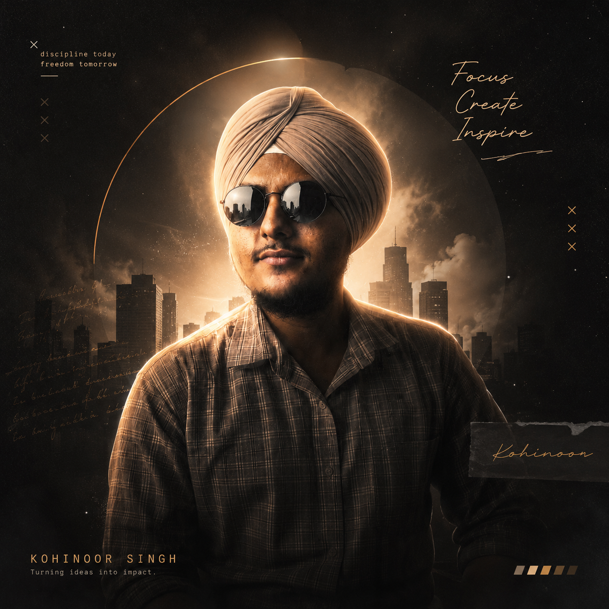

About Me
I’m Kohinoor Singh, a BCA student and aspiring full-stack web developer. I enjoy turning ideas into clean, responsive, and user-friendly web applications, while continuously improving my skills through hands-on projects. Every build helps me learn, solve better problems, and create more meaningful digital experiences.
Practice
I build web applications from front end to back end, with a focus on clear layouts, readable code, and interfaces that feel easy to use. I like working with the MERN stack because it lets me move smoothly between designing the experience and building the logic behind it.
Interests
- Responsive web design and clean UI
- Full-stack MERN applications
- Learning modern web technologies
- Solving practical problems through code
- Building and improving personal projects
Approach
Most of what I know comes from building, breaking, and rebuilding my own projects. I start with the user’s needs, keep the design simple, and improve each feature step by step. I value consistency, curiosity, and writing code that is practical to maintain.
Mediums
HTML, CSS, JavaScript, React, Node.js, Express, MongoDB, Git, and modern web development tools.